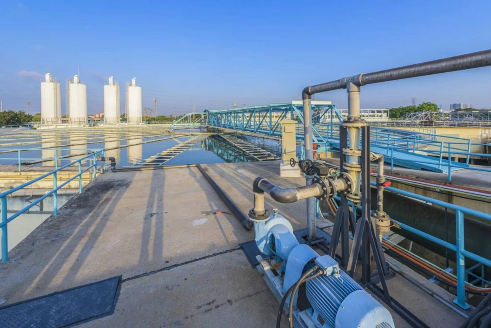
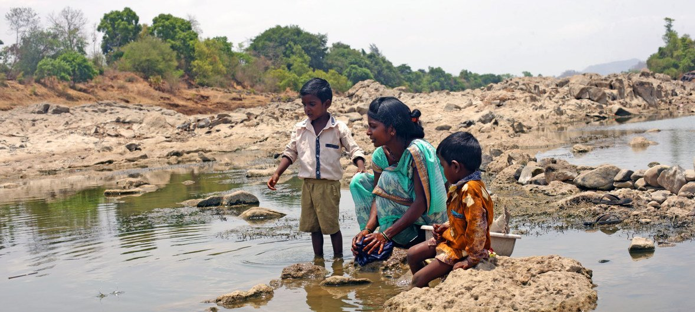
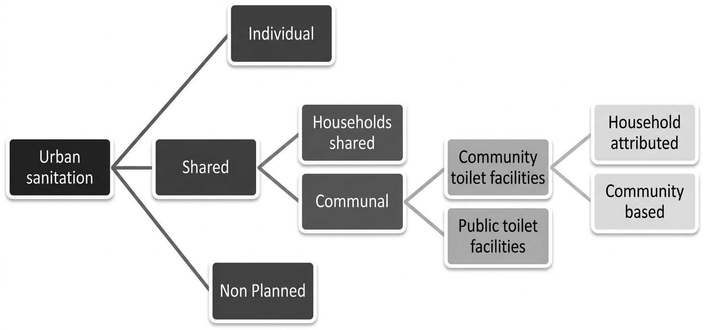
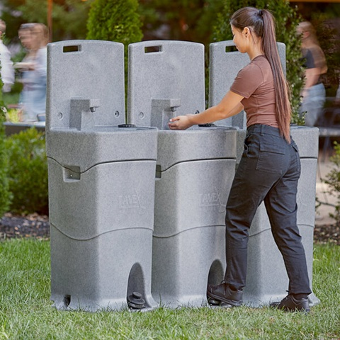
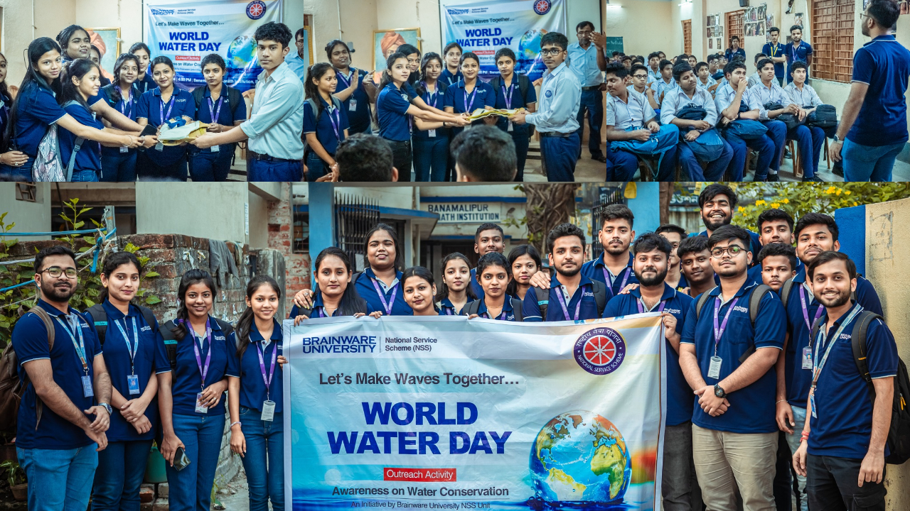

Sanitation Systems
Understanding how safe sanitation protects communities, prevents disease, and upholds the dignity and rights of every person on earth.
1. What Is Sanitation?
Sanitation refers to the systems and facilities that safely manage human waste and maintain cleanliness in living environments. It is one of the most fundamental contributors to human health, dignity, and community well-being. A proper sanitation system ensures that faeces, urine, and wastewater are collected, transported, treated, and disposed of in a way that protects people and the environment from contamination.
The United Nations recognises access to safe sanitation as a basic human right, yet billions of people worldwide still lack even the most basic facilities. Without sanitation, communities face devastating cycles of illness, missed education, and economic hardship that are extremely difficult to break.
SDG Target 6.2: By 2030, achieve access to adequate and equitable sanitation and hygiene for all, and end open defecation, paying special attention to the needs of women, girls, and people in vulnerable situations.

Why Sanitation Matters
Sanitation is directly linked to the prevention of waterborne diseases such as cholera, typhoid, and dysentery — illnesses that kill hundreds of thousands of people every year, the majority of whom are children under five.
Beyond health, sanitation enables children — especially girls — to attend school safely. It protects the privacy and dignity of women and girls. It also supports economic productivity, as healthy communities work and learn more effectively.
- Safe sanitation prevents the spread of deadly waterborne diseases
- Proper facilities allow girls to attend school through puberty
- Wastewater treatment protects rivers, lakes, and groundwater
- Clean environments reduce the burden on healthcare systems
2. The Global Sanitation Crisis
Despite enormous progress over recent decades, the global sanitation crisis remains one of the most pressing public health challenges of our time. Hundreds of millions of people still practise open defecation — defecating in fields, bodies of water, or other open spaces — because they have no access to toilets or latrines. This contaminates water sources and spreads disease on a massive scale.

Who Is Most Affected?
The sanitation crisis is not evenly distributed. The burden falls most heavily on communities in Sub-Saharan Africa and South Asia, where rapid urbanisation has outpaced infrastructure development. In informal urban settlements, overcrowding makes sanitation especially difficult to provide and maintain.
Women and girls face particular risks. Without private toilet facilities, many are forced to wait until darkness falls before they can defecate safely, exposing them to harassment and assault. Menstrual hygiene management is also a significant barrier to girls' education when schools lack proper sanitation facilities.
Every £1 invested in sanitation generates up to £5 in economic returns through reduced healthcare costs, increased productivity, and improved quality of life.
3. Types of Sanitation Systems
Sanitation is not a single solution — it is a spectrum of systems designed to suit different environments, population densities, and levels of infrastructure development. Understanding the range of available systems helps communities and policymakers make informed choices about which approaches best fit their context.
Basic Sanitation
Basic sanitation includes simple pit latrines and vault toilets. Although they do not connect to sewer systems, they provide an enormous improvement over open defecation by containing waste and reducing contact with pathogens. These systems are especially relevant for rural communities in low-income regions.
Improved Sanitation
Improved sanitation facilities include ventilated improved pit latrines (VIP latrines), pour-flush toilets, and composting toilets. These designs reduce odour, limit fly breeding, and manage waste more hygienically than basic pit latrines.
Safely Managed Sanitation
Safely managed sanitation — the gold standard — involves the use of flush or pour-flush toilets connected to sewers, septic systems, or other treatment facilities where waste is treated and disposed of safely. This is the system used in most high-income urban areas and is the target for SDG 6.2.

Wastewater Treatment
Beyond toilets, a complete sanitation system requires effective wastewater treatment. Untreated sewage discharged into rivers and oceans is one of the leading causes of water pollution globally. Modern treatment plants remove pathogens, nutrients, and chemical pollutants before water is returned to the environment — or even reused safely.
- Pit latrines provide basic containment in areas without pipe networks
- Septic tanks treat waste on-site and are common in suburban and rural areas
- Centralised sewage treatment removes pollutants before discharge
- Constructed wetlands use natural processes to filter wastewater sustainably
4. Hygiene & Health
Sanitation and hygiene are inseparable. Having a toilet is only part of the solution — the behaviours and habits surrounding its use are equally important. Handwashing with soap at critical moments (after using the toilet, before eating, before preparing food) is one of the single most cost-effective public health interventions known to science.

The WASH Framework
WASH stands for Water, Sanitation, and Hygiene — a framework used globally by governments, NGOs, and the UN to address these three interconnected issues together. The WASH approach recognises that providing water infrastructure alone is insufficient if sanitation facilities and hygiene education are not also in place.
School WASH
Schools are a critical site for WASH investment. When schools have functioning toilets, clean handwashing facilities, and hygiene education built into their curriculum, children develop lifelong habits that protect their own health and the health of their communities. Research shows that school WASH programmes also significantly reduce absenteeism, particularly among girls during menstruation.
Handwashing with soap can reduce the risk of diarrhoeal diseases by up to 40% and respiratory infections by up to 23% — making it one of the most powerful and affordable health interventions available.
Hygiene Behaviours That Make a Difference
- Wash hands with soap after using the toilet and before eating
- Keep toilet and bathroom areas clean and regularly disinfected
- Dispose of waste in designated facilities — never in open water
- Use safe water for drinking, cooking, and personal hygiene
- Educate younger siblings and community members about hygiene practices
5. What Can Students Do?
As students at the University of Westminster, we are in a uniquely powerful position to contribute to SDG 6. Our campus, our communities, and our daily habits all offer opportunities to make a meaningful difference. Sanitation is not just a problem in distant countries — it is a local responsibility too.

On Campus
- Report broken or unsanitary toilet facilities to facilities management promptly
- Use water-saving taps and flush systems responsibly
- Participate in or organise WASH awareness events on campus
- Avoid disposing of non-biodegradable items in toilets or drains
- Support student campaigns that fundraise for sanitation projects abroad
In Your Community
- Volunteer with local organisations working on sanitation access
- Educate family and friends about proper hygiene behaviours
- Advocate for better sanitation infrastructure in underserved areas
- Support charities working on sanitation such as WaterAid and UNICEF WASH
Student-led advocacy has driven real policy change. Your voice matters — write to your local council, sign petitions, and use social media to highlight the importance of sanitation as a human right.
6. Innovations & The Future of Sanitation
Technology and innovation are opening new possibilities for sanitation in contexts where traditional infrastructure is difficult or too costly to build. From solar-powered treatment systems to container-based sanitation models, innovators around the world are developing solutions that can be deployed rapidly and at scale.
Reinvented Toilet Initiative
The Bill & Melinda Gates Foundation's "Reinvent the Toilet" challenge has produced designs that process human waste without requiring piped water, sewer connections, or external power. These self-contained units convert waste into safe by-products like clean water and fertiliser — revolutionising what is possible in off-grid communities.
Container-Based Sanitation
In dense urban informal settlements where it is impossible to install underground sewers, container-based sanitation (CBS) services collect waste in sealed containers that are regularly collected and treated at off-site facilities. This model has been successfully deployed in Ghana, Haiti, and Bangladesh, serving thousands of households.
Biogas from Waste
Human waste is increasingly being recognised as a resource. Biogas digesters convert organic waste into methane gas that can be used for cooking and electricity generation, while the remaining digestate is a nutrient-rich fertiliser. This circular approach turns a public health problem into a clean energy solution.
- Solar-powered treatment units work in off-grid and remote locations
- Smart sensors monitor sewer systems and detect blockages automatically
- Biodegradable sanitation products reduce plastic waste in latrines
- Community-led total sanitation (CLTS) uses peer pressure to end open defecation
- Digital platforms help communities track and report sanitation infrastructure problems
Innovation alone is not enough — political will, community engagement, and sustained funding are equally essential. The technology exists to end the sanitation crisis; what is needed now is the collective commitment to deploy it.